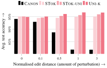
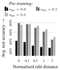
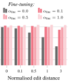
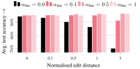
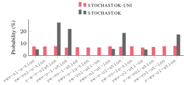
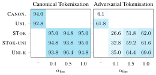
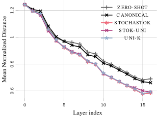

Stochastic Tokenisation Improves Robustness
1Institute of Signal Processing and Speech Communication, Graz University of Technology, Graz, Austria, 2Department of Computer Science, Aalto University, Espoo, Finland, 3King AI Labs, Microsoft Gaming, 4University of Oxford, Oxford, United Kingdom, 5KTH Royal Institute of Technology, Stockholm, Sweden
T L D R
We analyse how training with stochastic tokenisations affects robustness to adversarial attacks and random perturbations, and show that uniformly sampled stochastic tokenisations improve robustness without increasing inference cost.
Abstract
The widespread adoption of large language models (LLMs) has increased concerns about their robustness. Vulnerabilities in perturbations of tokenisation of the input indicate that models trained with a deterministic canonical tokenisation can be brittle to adversarial attacks. Recent studies suggest that stochastic tokenisation can deliver internal representations that are less sensitive to perturbations. In this paper, we analyse how stochastic tokenisations affect robustness to adversarial attacks and random perturbations. We systematically study this over a range of learning regimes (pre-training, supervised fine-tuning, and in-context learning), data sets, and model architectures. We show that pre-training and fine-tuning with uniformly sampled stochastic tokenisations improve robustness to random and adversarial perturbations. Evaluating on uniformly sampled non-canonical tokenisations reduces the accuracy of a canonically trained Llama-1b model by 29.3%. We find that training with stochastic tokenisation preserves accuracy without increasing inference cost.
Contributions
- We study how training with stochastic tokenisation affects robustness against random and adversarial tokenisations.
- We analyse the sampling distribution of STOCHASTOK, finding that it is biased, and introduce unbiased uniform sampling schemes.
- We provide theoretical insights into adversarial robustness introduced by stochastic tokenisation.
Problem: Tokenisation Brittleness
In subword tokenisation, string sequences are mapped to tokens. Text is typically encoded using a deterministic function that returns the canonical tokenisation. However, multiple other token sequences can reconstruct the same string, referred to as non-canonical tokenisations.
Same string, multiple valid tokenisations
In standard training, models see only canonical tokenisations and become brittle when evaluated on non-canonical tokenisations.

This motivates our core question: Does training with stochastic tokenisation improve robustness to non-canonical tokenisations (both random and adversarial), and if so, which sampling strategy works best?
Question 1 Does stochastic tokenisation improve robustness?
If we train LLMs with stochastic tokenisations instead of only the canonical one, do they become more robust to non-canonical (random) tokenisations?
Experiments
- Stochastic tokenisation scheme: STOCHASTOK, with a tunable parameter α controlling the level of stochasticity.
- We evaluate pre-training, fine-tuning, and in-context learning (ICL).
- Benchmarks: LANGUAGE GAME, CUTE, and standard MCQ datasets.
- Models: Tiny-LLM (from scratch), Llama-1b (LoRA fine-tuning), Llama-8b (ICL).
Results
- Canonically trained models are brittle: accuracy drops sharply under non-canonical tokenisations.
- Pre-training with stochastic tokenisation helps, but gains are moderate alone.
- Fine-tuning with stochastic tokenisation improves robustness, even with a small α.
- ICL with stochastic tokenisation gives mild robustness gains, but less than fine-tuning.



Training with stochastic tokenisations improves robustness while keeping clean accuracy intact. Using publicly available pre-trained checkpoints, stochastic fine-tuning alone achieves substantial robustness gains. ICL with stochastic tokenisation also helps, but to a lesser extent than fine-tuning.
Question 2 Improving with uniform sampling of tokenisations?
Does the distribution over stochastic tokenisations matter for robustness, and can we do better than STOCHASTOK?
Experiments
- We analyse STOCHASTOK sampling: It is biased and has incomplete support.
- New sampling schemes with increasing uniformity and support:
- STOCHASTOK-UNI: uniform conditional on per-token split counts.
- UNIFORM-K: uniform over all tokenisations at a given edit distance.
- UNIFORM: uniform over all valid tokenisations.
- Evaluate on random non-canonical tokenisations and increasing perturbation strength.

Higher uniformity and larger support lead to better robustness.
Question 3 Does stochastic tokenisation improve robustness against adversarial tokenisations?
Beyond random tokenisations, does training with stochastic tokenisation improve robustness to adversarial tokenisation attacks, and why?
Experiments
- We compare canonical, and stochastic tokenisation during fine-tuning and report accuracy under canonical and adversarial tokenisation.
- We analyse distances between non-canonical tokenisation representations to understand robustness mechanisms.
Results
- Canonical fine-tuning accuracy collapses under attack (≈94% → ≈6%).
- Stochastic schemes show massive robustness gains. More uniform sampling leads to stronger adversarial robustness.
- Representation analysis shows reduced sensitivity to tokenisation changes.
- Theory: Stochasticity smooths embedding space, reducing Lipschitz constants and adversarial vulnerability.


Stochastic fine-tuning reduces brittleness under adversarial tokenisation. Theoretically and empirically, stochasticity smooths representations and reduces adversarial vulnerability.
BibTeX
@article{steger2026stochastic,
title = {Stochasticity in Tokenisation Improves Robustness},
author = {Sophie Steger and Rui Li and Sofiane Ennadir and Anya Sims and Arno Solin and Franz Pernkopf and Martin Trapp},
journal = {arXiv preprint arXiv:xxxx.xxxxx},
year = {2026}
}